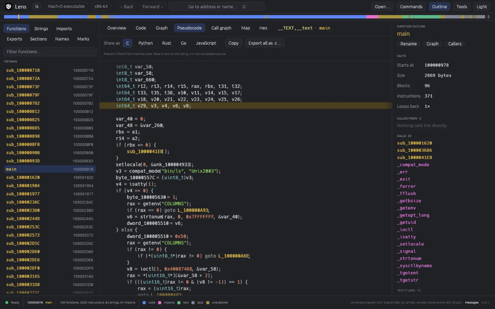
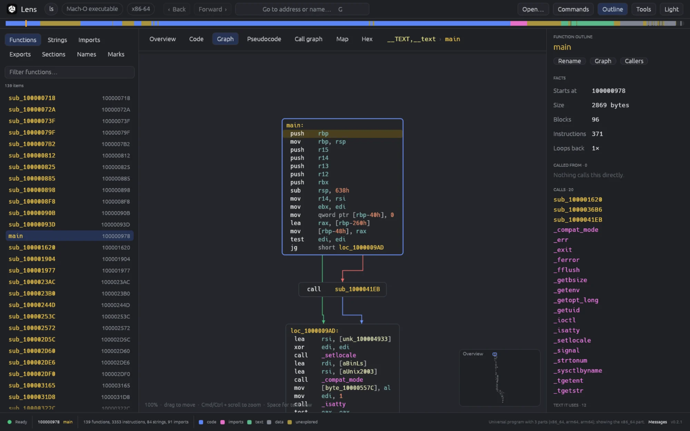
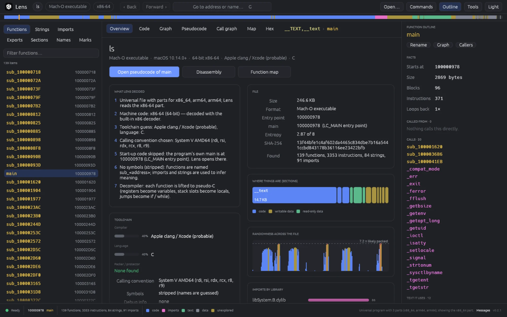
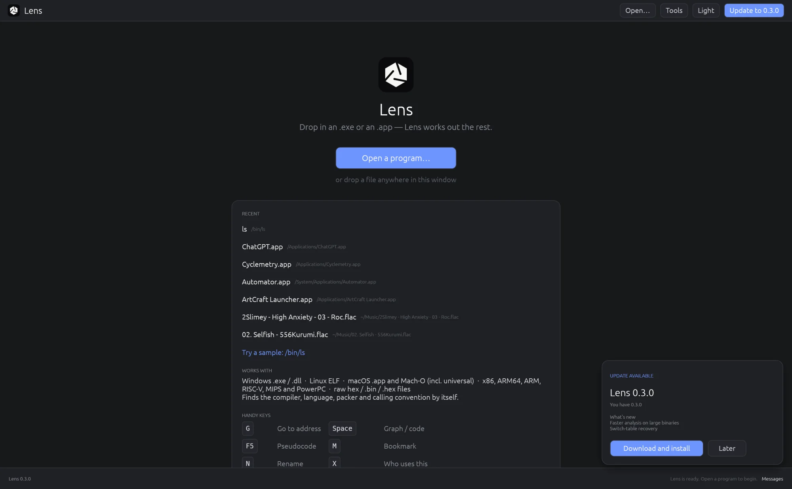
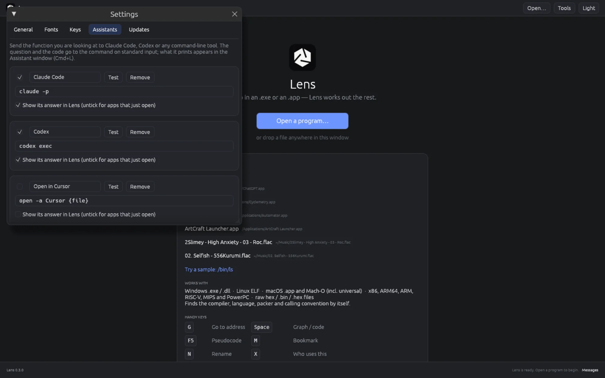

See what a program actually does.
Lens opens an executable and lays it out as disassembly, a control-flow graph, or pseudocode you can read. It works out the compiler, language and calling convention on its own.
Free · macOS, Apple Silicon · updates itself



Same function, three readings. This is main from the stock macOS ls, which has no symbols. Lens named the imports, found the strings, and turned 371 instructions into something you can follow with your eyes.
What's inside
A reverse-engineering tool is mostly a lot of small things working together. Here are the ones that exist today.
- CPUs
- x86, x86-64, ARM64, ARM, RISC-V, MIPS, PowerPCPseudocode is complete on x86. On the others it covers the integer core and marks anything else as
__mnemonic(...). - Files
- Mach-O (including universal and .app bundles), ELF, PEARM64 imports are resolved through chained fixups. Raw hex, .bin, Intel HEX and S-record load through Hex to Code.
- Pseudocode
- C, Python, Rust, Go or JavaScript styleRename a variable once and it stays renamed. Names, notes and bookmarks are saved per program.
- Patching
- Change bytes, NOP, flip a branch, save a copyThe copy is re-signed so it still launches. The original is never touched.
- Debugging
- Breakpoints, stepping and registers through lldbWon't attach to Apple-protected system binaries.
- Scripting
- Rhai scripts and pluginsRead functions, strings and cross-references. Rename, comment and patch.
- Assistants
- Send a function to Claude Code, Codex or any commandThe decompiled function goes to the tool you already have installed. Nothing is sent anywhere else.
- Yours
- Every shortcut rebindable, your own fonts, your own sizes


Where it stands
Lens is young. It is a long way from IDA Pro or Ghidra: no type recovery, no switch-table or vtable recovery, and it has seen far fewer odd binaries than they have. It's good for reading a program quickly, and it's getting better in the open.
The plan to close the gap, phase by phase, is in the roadmap.
Get it
Install once. After that Lens updates itself.
- DownloadTake
Lens-macos-arm64.zipfrom the latest release and drag Lens into Applications. - First launchThe build is ad-hoc signed, not notarized. Right-click the app and choose Open once.
- Open somethingDrop an executable on the window. Press
F5for pseudocode,Spacefor the graph.